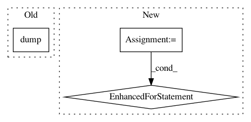

18fba98733551c294c760e7186f6a18d44d73d18,python/baseline/tf/lm/model.py,WordLanguageModel,save_md,#WordLanguageModel#Any#,117
Before Change
state = {"hsz": self.hsz, "batchsz": self.batchsz, "layers": self.layers}
with open(basename + ".state", "w") as f:
json.dump(state, f)
tf.train.write_graph(self.sess.graph_def, outdir, base + ".graph", as_text=False)
with open(basename + ".saver", "w") as f:
f.write(str(self.saver.as_saver_def()))
After Change
"layers": self.layers,
"tgt_key": self.tgt_key
}
for prop in ls_props(self):
state[prop] = getattr(self, prop)
write_json(state, basename + ".state")
for key, embedding in self.embeddings.items():
embedding.save_md("{}-{}-md.json".format(basename, key))
In pattern: SUPERPATTERN
Frequency: 3
Non-data size: 3
Instances
Project Name: dpressel/mead-baseline
Commit Name: 18fba98733551c294c760e7186f6a18d44d73d18
Time: 2018-09-24
Author: dpressel@gmail.com
File Name: python/baseline/tf/lm/model.py
Class Name: WordLanguageModel
Method Name: save_md
Project Name: tensorflow/models
Commit Name: c88fcb2bbb9cbb66c17eb891312bbe1cb250c384
Time: 2018-10-11
Author: shizhiw@google.com
File Name: official/recommendation/data_preprocessing.py
Class Name:
Method Name: instantiate_pipeline
Project Name: jsalt18-sentence-repl/jiant
Commit Name: f688c3c4a8c254bf5cdefd4e2e61587c0ef7a46e
Time: 2018-06-27
Author: jan.hula@osu.cz
File Name: src/preprocess.py
Class Name:
Method Name: build_tasks